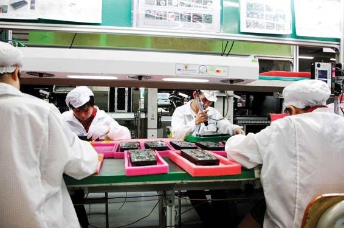

Globalization, as we saw in the opening to this chapter, has created global supply chains, giving corporations still greater flexibility in terms of hiring workers: whether a firm is in the business of selling shoes or computers, it can now outsource its production to independently owned factories, called contractors, around the world. If costs go up in one factory—or if workers decide to go on strike for higher wages or better working conditions—the firm can shift its production to another factory, perhaps even in another country. Developments in artificial intelligence, discussed later in this chapter, further increase firm flexibility, to the extent that workers can be replaced by robots, other electronic devices, or software applications.
Since the 1970s, flexible practices have been introduced in a number of spheres. Increasingly, global supply chains involving not only independent contract factories, but also group production, problem-solving teams, multitasking, niche marketing, and even the so-called gig-economy (involving temporary workers on short-term contracts) are just some of the strategies adopted by companies attempting to restructure themselves under shifting conditions. Some commentators have suggested that, taken collectively, these changes represent a radical departure from the principles of Fordism; they contend that we are now operating in a period that can best be understood as post-Fordism (Table 14.1). Post-Fordism, a term initially popularized by Michael Piore and Charles Sabel in The Second Industrial Divide (1984), describes a new era of capitalist-economic production in which flexibility and innovation are maximized to meet market demands for diverse customized products—albeit often with adverse effects on the workforce.
Table 14.1FORDIST VERSUS POST-FORDIST PRODUCTION SYSTEMS
FORDISM
POST-FORDISM
Bureaucratic/vertical
Flexible/horizontal
Mass production
Mass customization
Most work in-house (local)
Most work outsourced (global)
Job security (high wage, long term, full time, high career advancement)
Job insecurity (low wage, short term, part time, low career advancement)
The idea of post-Fordism is somewhat problematic, however. The term is used to refer to a set of overlapping changes that are occurring not only in the realm of work and economic life but also throughout society as a whole. Some writers argue that the tendency toward post-Fordism can be seen in spheres as diverse as party politics, welfare programs, and consumer and lifestyle choices. While observers of late-modern societies often point to many of the same changes, there is no consensus about the precise meaning of post-Fordism or, indeed, if this term is even the best way of understanding the phenomenon we are witnessing.
Regardless of the confusion surrounding the term post-Fordism, several distinctive trends within the world of work have emerged in recent decades that seem to represent a clear departure from earlier Fordist practices. These include the replacement of highly bureaucratic, vertically organized business structures with more flexible, horizontally organized networked approaches; the transition from mass production to mass customization; a shift from in-house production to global outsourcing; and the resulting severe erosion in job security for employees. We now consider each of these in turn. We will consider a fifth trend, the decline of labor union power, later in this chapter.
Flexible Business Structures
One of the most important changes in worldwide production processes over the past few years has been an increase in the organizational flexibility of many large firms. For much of the twentieth century, the most important business organizations were large manufacturing firms that controlled both the making of goods and their final sales. Giant automobile companies, such as Ford and General Motors (GM), typified this approach. These companies employed tens of thousands of factory workers to make everything from components to the final cars, which were then sold in the manufacturers’ showrooms. Such manufacture-dominated production processes were organized as large bureaucracies, often controlled by a single firm.
If General Motors, a highly bureaucratic organization, represented the prototypical corporation of the twentieth century, Walmart may well prove to be symbolic of the twenty-first (Lichtenstein, 2010, 2011; Appelbaum, 2019). Sociologist Gary Hamilton has described a world in which “big buyers”—global retailers—are becoming increasingly dominant in the global economy, not only reshaping business structures but also driving economic development in those regions (such as East Asia) that supply their products (Petrovic and Hamilton, 2006). While both General Motors and Walmart are giant transnational corporations, GM is organized vertically: Most of its production is still done under its own roof, controlled by its own management structure in a highly bureaucratized fashion. GM still designs, produces, and markets the cars that it sells. Control, in other words, is highly centralized.
Walmart is the world’s largest corporation, with 2018 revenues of more than $514 billion and 2.2 million employees worldwide. Although it is a publicly traded company on the stock market, more than half of all shares are owned by the descendants of founder Sam Walton, making it a family-owned company. Unlike GM, Walmart designs very little of what it sells and produces next to nothing. Walmart sells products designed by others—the thousands of brands and labels available in its stores. Those brands and labels, in turn, seldom actually make the products they design: That task falls to factories around the world. Like GM, Walmart exerts control over its suppliers—but in this case, the suppliers are outside the firm rather than part of it. The resulting horizontal network of retailers, brands, and factories enables each to respond quickly to changes in market conditions, in a way that the more vertically organized GM never could hope to do. If an economic slowdown or changing buyer tastes causes a drop in sales for GM, the corporation still has to cover the cost of expensive plants and equipment, as well as meet the payroll of hundreds of thousands of employees, from management to the factory floor. While Walmart has plenty of stores to maintain (some 5,400 in the United States and an additional 6,200 worldwide)(Walmart, 2020), its situation is markedly different from GM’s: If Sony flat-panel TVs are not moving, Walmart can simply tell Sony it is reducing its orders and shift to Panasonic. Sony, in turn, can respond by canceling orders in some of the contract factories that are its suppliers. Those factories then either switch to other labels (perhaps Panasonic) or else lay off workers.
Walmart controls its suppliers through the information technology (IT) that has revolutionized the field of supply chain management. Today’s world of flexible production involves complex networks of buyers and suppliers: A clothing company such as the Gap may have hundreds or even thousands of independently owned factories supplying its stores, while each of those factories may in turn be making clothing for many competing brands. Coordinating these activities requires sophisticated computer technology—electronic data interchange (EDI) software systems that enable firms to share relevant data, beginning with the information on the bar code attached to each product that is scanned at the time of purchase. The most advanced systems, such as those pioneered by Walmart, enable firms to order just the right number of products to meet demand, shift their orders among different suppliers, and respond “nimbly”—a favored term of business—to changing market conditions. Today, even large automobile manufacturers such as GM have moved down the post-Fordist path, outsourcing as much work as possible and using advanced information systems to manage their supply chains.
Mass Customization
Controlling such far-flung networks of suppliers is only part of the challenge modern businesses face. They must also cater to their customers’ changing demands—demands that are shaped, in turn, by a constant flow of advertising in magazines, newspapers, television, radio, and movies. Film franchises such as The Avengers, Star Wars, Spiderman, and Transformers are always accompanied by a deluge of toys based on the movie. Although Taylorism and Fordism successfully produced mass products (that were all the same) for mass markets, they were completely unable to produce small orders of goods, let alone goods specifically made for an individual customer. GM or Ford changed the overall design of its cars every couple of years, and the changes were often largely cosmetic: Large tail fins adorned cars in the 1950s, marketed as providing “greater stability on the nation’s highways.”
Mass customization has changed all this (Pine, 1999). It combines the large-volume production associated with Fordism with the flexibility required to tailor products to consumers’ needs. Computer-aided design, coupled with other types of computer-based technology such as EDI, now permits factories to alter their assembly lines for small-batch production, serving (and creating) particular market niches. Information can be solicited about individual consumers and analyzed to determine the key types of consumer preferences for particular products, which are then manufactured to those specifications. In a modern car factory, several different models can even be built on the same assembly line. The latest development in mass customization is additive manufacturing, or 3D printing, a technology that dates back to the 1980s but only became commercially available (and increasingly affordable) in recent years. This printing process involves the ability, using computerized technology, to add layers of materials that result in physical objects such as fashion accessories, car parts, artificial organs, weapons, and even component parts for the Mars land rover. Nike, Adidas, and Reebok, for example, have developed the ability to scan a customer’s foot and print out a custom-designed athletic shoe—or eventually, as 3D printers come down in cost, perhaps even in the customer’s home (Matisons, 2015). Nike’s “Zoom Vaporfly Elite Flyprint 3D” was designed with the help of Eliud Kipichoge, winner of the 2018 Berlin Marathon. Nike claims that the Vaporfly’ light-weight 3D-tailored construction can reduce a runner’s energy output by 4 percent, presumably increasing their performance by a comparable amount (Iftikhar, 2018).
Current technology allows factories to respond to specific market and consumer needs. Companies like Dell sell first and build second.
Dell was one of the first major computer companies to carry mass customization to a high level, although it is now commonplace for consumers of all major brands to custom design their computer online, charge the purchase to their credit card, and, within a week, receive the custom-made computer at their door. Dell is often thought of as a computer-manufacturing company, but in fact, the company does not make any significant computer components. Instead, it assembles components others produce, controlling its supply chains through EDI. In effect, Dell has turned traditional ways of doing business upside down. Firms used to build a product first, then worry about selling it. Now mass customizers such as Dell sell first and build second. Such a shift has important consequences for industry. The need to hold stock of parts on hand, a major cost for manufacturers, has been dramatically reduced. In addition, an increasing share of production is outsourced. Thus, the rapid transfer of information between manufacturers and suppliers is essential to the successful implementation of mass customization.
One form of mass customization is the smartphone app, which gives users access to countless different sources of products, services, games, and information. Today, one can use an app (once a shortened version of “application,” now a word in itself) to custom design a computer, find a taco stand or gas station nearby, determine whether a product is environmentally friendly, turn a photo of a best friend’s face into an aging zombie, or do millions of other things: as of mid-2019, there were 2.5 million Android apps and 2 million Apple apps (Statista, 2019).
Global Outsourcing
Changes in industrial production include not only how products are manufactured but also where they are manufactured. In flexible production systems, there is truly a global assembly line: The companies that design and sell products seldom make them in their own factories, instead outsourcing production to factories around the world. As we saw in Chapter 9, none of the 185 million iPhones sold in 2019 (Graham, 2020) were assembled in the United States; with few exceptions, the production of almost all the iPhone’s components were done in virtually a United Nations catalogue of countries.
As we learned in the chapter opener, few, if any, industries are as globalized as the industry that makes the clothing and footwear that fill your closet. Almost no major U.S. companies today make their own apparel or footwear; rather, they outsource to independently owned factories that do the work for them. These factories are found in more than 100 different countries and range from tiny sweatshops to giant plants owned by transnational corporations. Most so-called garment manufacturers actually employ no garment workers at all. Instead, they rely on thousands of factories around the world to make their apparel, which they then sell in department stores and other retail outlets. Clothing manufacturers do not own any of these factories and are therefore free to use them or not, depending on their needs. While this system provides the manufacturers with the flexibility previously discussed, it creates great uncertainty both for the factories, which must compete with one another for orders, and for the workers in those factories, who may lose their jobs if their factory loses business (Bonacich and Appelbaum, 2000).
Bonacich and Appelbaum (2000) argue that such flexible production, driven by global competition, has resulted in a global “race to the bottom,” in which retailers and manufacturers will go anyplace on earth where they can find the lowest wages, the fewest environmental restrictions, and the most lax governmental regulations. This system invites abuses—as evidenced by the well-publicized cases of toxic toys made in Chinese factories under contract to leading U.S. brands such as Mattel.
Job Insecurity
Flexible production has produced some benefits for consumers and the economy as a whole, but the effect on workers has not been wholly positive. Though some workers undoubtedly do learn new skills and have less monotonous jobs, the majority find their work lives less secure than before. For many workers inside the United States, the long-term employment, rising wages, career advancement, and health and retirement benefits once associated with a job at a General Motors or Ford plant have become a thing of the past. To keep their jobs, U.S. workers have had to accept pay cuts and reduced benefits packages. And, of course, many have lost their jobs to overseas competition.